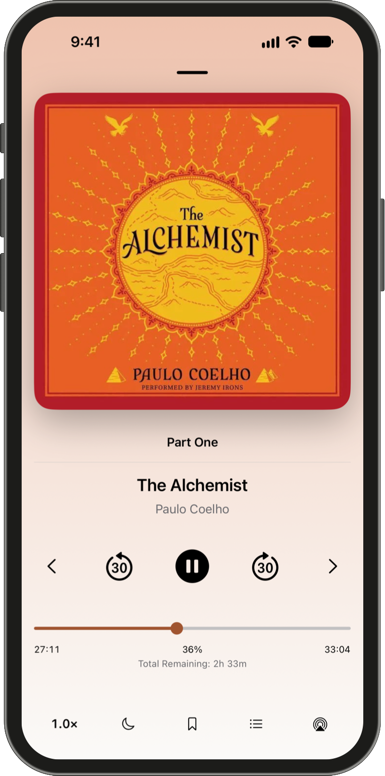
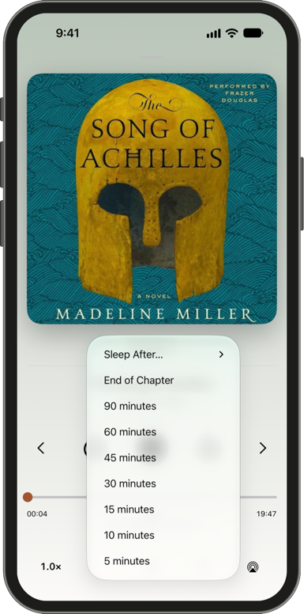

Reproductor de audiolibros para iPhone, iPad y Apple Watch
Para los audiolibros que ya tienes.
Reproduce tus archivos de audiolibro M4B, MP3 y otros sin DRM con sus capítulos, y sigue donde lo dejaste en cada dispositivo.


Cómo funciona Trae tus propios audiolibros.
-
Consigue tus archivos
Audiolibros sin DRM de tiendas como Libro.fm y Downpour, CD que hayas copiado o clásicos de dominio público de LibriVox.
-
Impórtalos
Desde Archivos, iCloud Drive, AirDrop o un ordenador. Un libro en varias partes se convierte en uno solo.
-
Escucha donde quieras
Tu punto, tus estanterías y tus marcadores te siguen al iPad, al Apple Watch y al coche a través de tu propio iCloud. Sin cuenta ni servidor.
Reproduce M4B, M4A, MP3, AAC, FLAC, WAV, AIFF, Ogg Opus y MP4. Los archivos AAX de Audible solo se reproducen en la app de Audible.
Reproductor Hecho para libros largos.
-

Capítulos
Salta de capítulo en capítulo y mira cuánto llevas de cada uno. La lista completa está a un toque.
-

Velocidad
De 0,5× a 6× en pasos de 0,05, con el tiempo que queda a cada velocidad.
-

Temporizador de apagado
De cinco minutos al final del capítulo, con la cuenta atrás en la pantalla bloqueada.
-

Marcadores
Guarda un momento con un toque, y una nota para recordar por qué.
Además, saltos de 5 a 45 segundos, un breve retroceso al pausar y una reproducción que sigue tras las llamadas y las alarmas.

Biblioteca Estanterías, como las de tu casa.
Estanterías dentro de estanterías. Sanderson, luego Cosmere, luego Mistborn. Anídalas hasta donde llegue tu colección.
Encuentra cualquier libro. Busca por título, autor y estantería, o muestra solo lo que estás escuchando.
Apple Watch Deja el iPhone en casa.
Pasa un libro a tu Apple Watch antes de salir a correr, o deja el iPhone en el bolsillo y contrólalo desde la muñeca. Cómo funciona en el Apple Watch


CarPlay y Siri Las manos, en el volante.
Sigue donde lo dejaste o explora tus estanterías. Luego, solo pídelo.
- «Retrocede 30 segundos».
- «Siguiente capítulo».
- «Para al final de este capítulo».

Y más.
-
Atajos
Acciones para la reproducción, los capítulos, la velocidad, los marcadores y el temporizador.
-
Pantalla bloqueada
El temporizador cuenta atrás allí y en la Dynamic Island.
-
Widgets
Lo que suena en tu pantalla de inicio, y controles en el centro de control.
-
Estadísticas
Por semana, mes y año, con un repaso cada enero.
-
Cada detalle
Títulos, autores y portadas desde Fotos o Archivos, a tu gusto.
-
Exportar
Toda tu biblioteca a Archivos, con marcadores y notas.
-
Spotlight
Encuentra un libro desde la búsqueda de la pantalla de inicio.
-
Ocho idiomas
Con su propio ajuste de idioma.
Privacidad Sin cuenta. Sin anuncios. Sin rastreo.
Sin suscripción para escuchar los libros que ya tienes. Tu biblioteca vive en tus dispositivos y en tu propio iCloud, y las estanterías que ocultas quedan protegidas con Face ID.
En el App Store, la etiqueta de privacidad de Novelwave indica «Datos no recopilados». Lee la política de privacidad
Reseñas del App Store Lo que dicen quienes lo escuchan.
-
★★★★★
“I open the app and all my audiobooks are right in front of me, ready to play, with all the listening tools I need and 0 clutter.”
DaveAsh90 · Estados Unidos
-
★★★★★
“This app does everything it needs to and nothing it doesn’t. A sleek, simple interface and enough playback customisation to allow many different listening styles.”
Alastair Stone · Reino Unido
-
★★★★★
“I tried a similar app, but the speed settings & sleep timer options for Novelwave beat the competition. (Stop at end of chapter = genius!)”
hollyreviewsapps · Estados Unidos
-
★★★★★
“I tried several other apps and this one is by far the most responsive and reliable.”
nonetaat · Estados Unidos
-
★★★★★
“Just enough customization and features to make the player disappear into the background while enjoying the audiobook.”
Throog · Estados Unidos
-
★★★★★
“Indie dev, zero data collection and telemetry, responsive to feedback.”
Massaholic · Estados Unidos